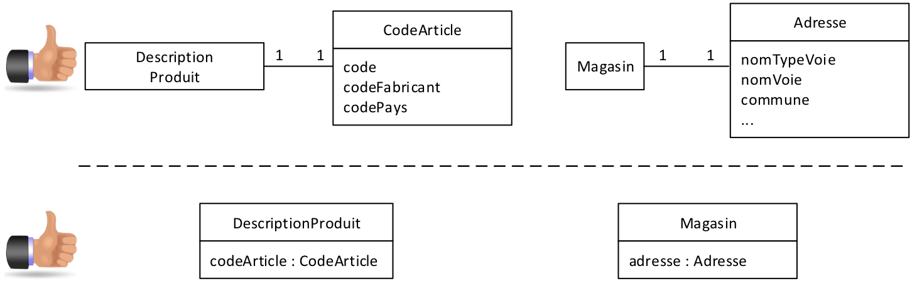
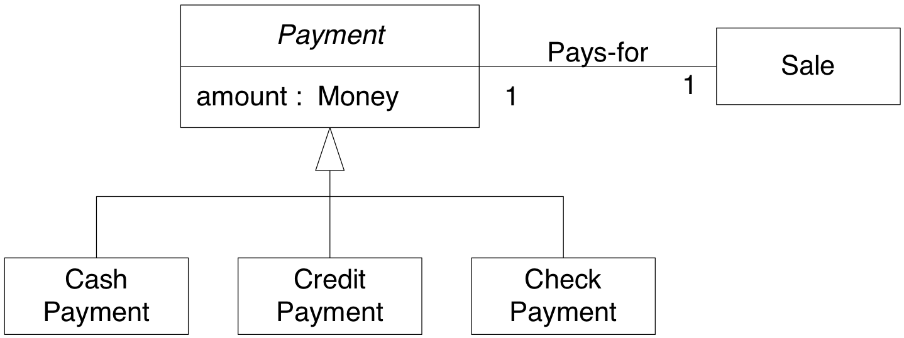
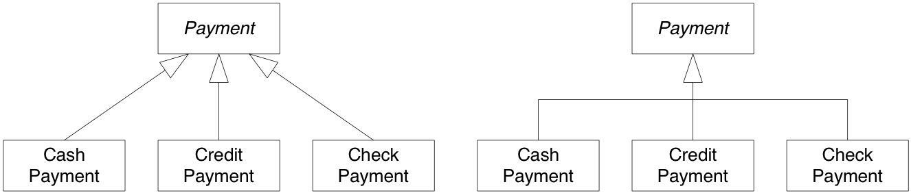
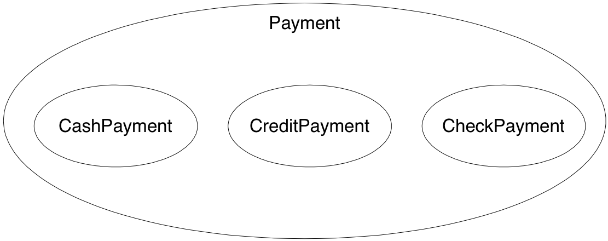
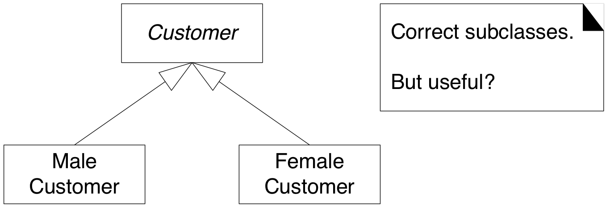
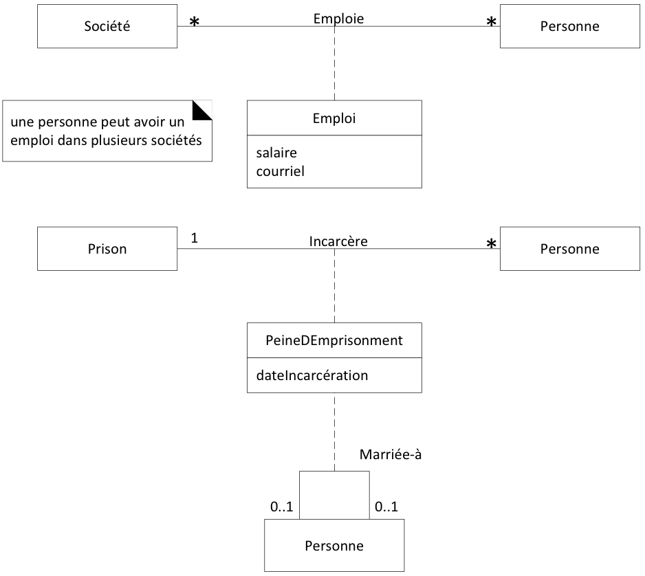

Classes conceptuelles
Attributs
Associations
Risk
1) Classes 2) attributs 3) associations, 4) Association a un verbe (éviter verbes «avoir», «posséder», «contenir» car ils sont moins précis), 5) Association un sens de lecture (indiqué par triangle), 6) association a cardinalités 7) association parfois multiple (Pays et Attaque), 8) classe d’association (Occupation), 9) pas d’association qui ne sont pas «mémorables» (JeuRisk et Attaque) 10)composition
Dans LOG210 il faut spécifier les types des attributs
Voyez-vous où appliquer un attribut dérivé?
Joueur./nbPaysOccupés: int
On reçoit les renforts selon le nombre de pays occupés. Utiliser une classe d’association
Définir de nouveaux types quand les types primitifs ne sont pas adéquats
ex : Sigle de cours $\rightarrow$ LOG120
ex : un code SKU

Lire Ch. 32.2-32.7 (version française 26.2-26.7)

CashPayment a un attribut « amount » et CheckPayment est associé aussi à Sale. Une sous casse conceptuelle respecte les deux règles suivantes: Est-un, A 100%
Les énoncés sur les super-classes s’appliquent aux sous-classes

100% de la définition d’une classe conceptuelle est applicable aux sous-classes
Sous-classe
conforme à 100% à sa superclasse
en termes d’attributs
en termes d’associations
Sous-classe conceptuelle
est membre de l’ensemble de sa superclasse
objet d’une sous-classe est un objet de la super-classe

possède des attributs additionnels intéressants
possède des associations additionnelles intéressantes
réagit, est manipulée, est traitée d’une façon intéressante et
différemment de sa superclasse
différemment d’autres sous-classes
représente un objet animé (humain, animal, robot) ayant un comportement différent et intéressant
Exemples: Tableau F26.2/A32.2
Quand définit-on une super-classe conceptuelle?
Lorsque les classes sont des variations de concepts similaires
respectent les règles à 100% et « est un »
ont des attributs communs
qui pourraient être placés dans la super-classe
ont les mêmes associations
qui pourraient s’appliquer à la super-classe

figure: F26.6, A32.6
Services d’autorisation de paiement
assignent une identification à chaque magasin
demande d’autorisation de paiement codeVendeur
le même magasin peut utiliser plusieurs services, chacun lui donnant un codeVendeur différent
Dans quelle classe conceptuelle mettre codeVendeur?
Règles pour l’ajout :
un attribut est lié à une association
la durée de vie des instances de la classe d’association dépend de l’association
«historic mapping» (patron d’analyse, M. Fowler)
il y a une association N-N entre deux concepts et des informations liées à l’association elle-même.
https://martinfowler.com/apsupp/properties.pdf

voir: seance-03-exercice-reserverLivre
Un client appelle à l’hôtel pour placer une réservation.
Le commis démarre une nouvelle réservation.
Le commis saisit la date d’arrivée; la date de départ; le nom de la catégorie de chambre; la quantité de chambres.
Le système inscrit les informations à la réservation.
Les étapes 3 et 4 sont répétées tant que le client n’indique pas qu’il a terminé
Le commis termine la réservation.
Le système affiche toutes les informations entrées.
Le commis valide les informations auprès du client et confirme la réservation à l’aide du nom et du numéro de téléphone du client.
Le système enregistre la réservation et affiche le numéro de confirmation.
Le commis communique le numéro de confirmation au client.
voir seance-01-exercice-CU02